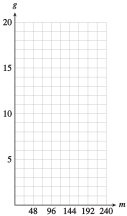
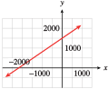

Exercises 1.8 Homework 1.1
¶1.
The temperature in the desert at 6 a.m., just before sunrise, was \(65\degree\)F. The temperature rose \(5\) degrees every hour until it reached its maximum value at about 5 p.m. Complete the table of values for the temperature, \(T\text{,}\) at \(h\) hours after 6 a.m.
| \(h\) | \(0\) | \(3\) | \(6\) | \(9\) | \(10\) |
| \(T\) | \(\hphantom{0000}\) | \(\hphantom{0000}\) | \(\hphantom{0000}\) | \(\hphantom{0000}\) | \(\hphantom{0000}\) |
Write an equation for the temperature, \(T\text{,}\) in terms of \(h\text{.}\)
-
Graph the equation.

How hot is it at noon? Illustrate the answer on your graph.
When will the temperature be \(110\degree\)F? Illustrate the answer on your graph.
| \(h\) | \(0\) | \(3\) | \(6\) | \(9\) | \(10\) |
| \(T\) | \(65\) | \(80\) | \(95\) | \(110\) | \(115\) |
\(T=65+5h\)

\(95\degree\)
3 p.m.
2.
The taxi out of Dulles Airport charges a traveler with one suitcase an initial fee of $\(2.00\text{,}\) plus $\(1.50\) for each mile traveled. Complete the table of values showing the charge, \(C\text{,}\) for a trip of \(n\) miles.
| \(n\) | \(0\) | \(5\) | \(10\) | \(15\) | \(20\) | \(25\) |
| \(C\) | \(\hphantom{0000}\) | \(\hphantom{0000}\) | \(\hphantom{0000}\) | \(\hphantom{0000}\) | \(\hphantom{0000}\) | \(\hphantom{0000}\) |
Write an equation for the charge, \(C\text{,}\) in terms of the number of miles traveled, \(n\text{.}\)
-
Graph the equation.

What is the charge for a trip to Mount Vernon, \(40\) miles from the airport? Illustrate the answer on your graph.
If a ride to the National Institutes of Health (NIH) costs $\(39.50\text{,}\) how far is it from the airport to the NIH? Illustrate the answer on your graph.
3.
On October 31, Betty and Paul fill their \(250\)-gallon oil tank for their heater. Beginning in November, they use an average of \(15\) gallons of oil per week. Complete the table of values for the amount of oil, \(A\text{,}\) left in the tank after \(w\) weeks.
| \(w\) | \(0\) | \(4\) | \(8\) | \(12\) | \(16\) |
| \(A\) | \(\hphantom{0000}\) | \(\hphantom{0000}\) | \(\hphantom{0000}\) | \(\hphantom{0000}\) | \(\hphantom{0000}\) |
Write an equation that expresses the amount of oil, \(A\text{,}\) in the tank in terms of the number of weeks, \(w\text{,}\) since October 31.
-
Graph the equation.

How much did the amount of fuel oil in the tank decrease between the third week and the eighth week? Illustrate this amount on the graph.
When will the tank contain more than \(175\) gallons of fuel oil? Illustrate on the graph.
| \(w\) | \(0\) | \(4\) | \(8\) | \(12\) | \(16\) |
| \(A\) | \(250\) | \(190\) | \(130\) | \(70\) | \(10\) |
\(A=250-15w\)

75 gallons
Until the fifth week
4.
Leon's camper has a \(20\)-gallon gas tank, and he gets \(12\) miles to the gallon. (That is, he uses \(\frac{1}{12}\) gallon per mile.) Complete the table of values for the amount of gas, \(g\text{,}\) left in Leon's tank after driving \(m\) miles.
| \(m\) | \(0\) | \(48\) | \(96\) | \(144\) | \(192\) |
| \(g\) | \(\hphantom{0000}\) | \(\hphantom{0000}\) | \(\hphantom{0000}\) | \(\hphantom{0000}\) | \(\hphantom{0000}\) |
Write an equation that expresses the amount of gas, \(g\text{,}\) in Leon's fuel tank in terms of the number of miles, \(m\text{,}\) he has driven.
-
Graph the equation.
 How much gas will Leon use between 8 a.m., when his odometer reads \(96\) miles, and 9 a.m., when the odometer reads \(144\) miles? Illustrate on the graph.
If Leon has less than \(5\) gallons of gas left, how many miles has he driven? Illustrate on the graph.
5.
Phil and Ernie buy a used photocopier for $\(800\) and set up a copy service on their campus. For each hour that the copier runs, Phil and Ernie make $\(40\text{.}\)
Write an equation that expresses Phil and Ernie's profit (or loss), \(P\text{,}\) in terms of the number of hours, \(t\text{,}\) they run the copier.
Find the intercepts and sketch the graph. (Suggestion: Scale the horizontal axis from \(0\) to \(40\) in increments of \(5\text{,}\) and scale the vertical axis from \(-1000\) to \(400\) in increments of \(100\text{.}\))
What do the intercepts tell us about the profit?
\(P=-800+40t\)
-
\((0,-800)\text{,}\) \((20,0)\)

The \(P\)-intercept, \(-800\text{,}\) is the initial \((t = 0)\) value of the profit. Phil and Ernie start out \(\$800\) in debt. The \(t\)-intercept, \(20\text{,}\) is the number of hours required for Phil and Ernie to break even.
6.
A deep-sea diver is taking some readings at a depth of \(400\) feet. He begins rising at \(20\) feet per minute.
Write an equation that expresses the diver’s altitude, \(h\text{,}\) in terms of the number of minutes, \(m\text{,}\) elapsed. (Consider a depth of \(400\) feet as an altitude of \(-400\) feet.)
Find the intercepts and sketch the graph. (Suggestion: Scale the horizontal axis from \(0\) to \(24\) in increments of \(2\text{,}\) and scale the vertical axis from \(-500\) to \(100\) in increments of \(50\text{.}\))
What do the intercepts tell us about the diver's depth?
7.
There are many formulas for estimating the annual cost of driving. The Automobile Club estimates that fixed costs for a small car—including insurance, registration, depreciation, and financing—total about $\(5000\) per year. The operating costs for gasoline, oil, maintenance, tires, and so forth are about \(12.5\) cents per mile. (Source: Automobile Association of America)
Write an equation for the annual driving cost, \(C\text{,}\) in terms of \(d\text{,}\) the number of miles driven.
-
Complete the table of values.
Miles Driven \(4000\) \(8000\) \(12,000\) \(16,000\) \(20,000\) Cost ($) \(\hphantom{0000}\) \(\hphantom{0000}\) \(\hphantom{0000}\) \(\hphantom{0000}\) \(\hphantom{0000}\) Choose scales for the axes and graph the equation.
How much does the annual cost of driving increase when the mileage increases from \(8000\) to \(12,000\) miles? Illustrate this amount on the graph.
How much mileage will cause the annual cost to exceed $\(7000\text{?}\) Illustrate on the graph.
\(C=5000+0.125d\)
-
Complete the table of values.
Miles Driven \(4000\) \(8000\) \(12,000\) \(16,000\) \(20,000\) Cost ($) \(5500\) \(6000\) \(6500\) \(7000\) \(7500\) 
$\(500\)
More than 16,000 miles
8.
The boiling point of water changes with altitude. At sea level, water boils at \(212\degree\)F, and the boiling point diminishes by approximately \(0.002\degree\)F for each \(1\)-foot increase in altitude.
Write an equation for the boiling point, \(B\text{,}\) in terms of \(a\text{,}\) the altitude in feet.
-
Complete the table of values.
Altitude (ft) \(-500\) \(0\) \(1000\) \(2000\) \(3000\) \(4000\) \(5000\) Boiling point (\(\degree\)F) \(\hphantom{0000}\) \(\hphantom{0000}\) \(\hphantom{0000}\) \(\hphantom{0000}\) \(\hphantom{0000}\) \(\hphantom{0000}\) \(\hphantom{0000}\) Choose scales for the axes and graph the equation.
How much does the boiling point decrease when the altitude increases from \(1000\) to \(3000\) feet? Illustrate this amount on the graph.
At what altitudes is the boiling point less than \(204\degree\)F? Illustrate on the graph.
For each table, choose appropriate scales for the axes and plot the given points.
9.
| \(x\) | \(0\) | \(80\) | \(90\) | \(120\) |
| \(y\) | \(6\) | \(2\) | \(1.5\) | \(1\) |

10.
| \(x\) | \(300\) | \(500\) | \(800\) | \(1100\) |
| \(y\) | \(1.2\) | \(1.3\) | \(1.5\) | \(1.9\) |
11.
| \(x\) | \(0.01\) | \(0.03\) | \(0.06\) | \(0.07\) |
| \(y\) | \(-0.2\) | \(-1\) | \(-1.1\) | \(-2\) |

12.
| \(x\) | \(0.003\) | \(0.005\) | \(0.008\) | \(0.011\) |
| \(y\) | \(6\) | \(2\) | \(1.5\) | \(1\) |
For Problems 13-18,
Find the intercepts of the graph.
Graph the equation by the intercept method.


For Problems 19-24,
Find the intercepts of the graph.
Use the intercepts to choose scales for the axes, and then graph the equation by the intercept method.
19.
\(20x = 30y - 45,000\)
\((-2250, 0), (0, 1500)\)
- 
20.
\(30x = 45y + 60,000\)
21.
\(0.4x + 1.2y = 4.8\)
\((12, 0), (0, 4)\)
22.
\(3.2x - 0.8y = 12.8\)
23.
\(\displaystyle{\frac{2x}{3}+ \frac{3y}{11}= 1}\)
\(\left(\dfrac{3}{2} , 0\right), \left(0, \dfrac{11}{3} \right)\)

24.
\(\displaystyle{\frac{8x}{7}- \frac{2y}{7}= 1}\)
25.
The owner of a gas station has $\(19,200\) to spend on unleaded gas this month. Regular unleaded costs him $\(2.40\) per gallon, and premium unleaded costs $\(3.20\) per gallon.
How much do \(x\) gallons of regular cost? How much do \(y\) gallons of premium cost?
Write an equation in general form that relates the amount of regular unleaded gasoline, \(x\text{,}\) the owner can buy and the amount of premium unleaded, \(y\text{.}\)
Find the intercepts and sketch the graph.
What do the intercepts tell us about the amount of gasoline the owner can purchase?
$\(2.40x,\) $\(3.20y\)
\(2.40x + 3.20y = 19,200\)

The \(y\)-intercept, \(6000\) gallons, is the amount of premium that the gas station owner can buy if he buys no regular. The \(x\)-intercept, \(8000\) gallons, is the amount of regular he can buy if he buys no premium.
26.
Five pounds of body fat is equivalent to \(16,000\) calories. Carol can burn \(600\) calories per hour bicycling and \(400\) calories per hour swimming.
How many calories will Carol burn in \(x\) hours of cycling? How many calories will she burn in \(y\) hours of swimming?
Write an equation in general form that relates the number of hours, \(x\text{,}\) of cycling and the number of hours, \(y\text{,}\) of swimming Carol needs to perform in order to lose \(5\) pounds.
Find the intercepts and sketch the graph.
What do the intercepts tell us about Carol's exercise program?
27.
Delbert must increase his daily potassium intake by \(1800\) mg. He decides to eat a combination of figs and bananas, which are both low in sodium. There are \(9\) mg potassium per gram of fig, and \(4\) mg potassium per gram of banana.
How much potassium is in \(x\) grams of fig? How much potassium is in \(y\) grams of banana?
Write an equation in general form that relates the number of grams, \(x\text{,}\) of fig and the number of grams, \(y\text{,}\) of banana Delbert needs to get \(1800\) mg of potassium.
Find the intercepts and sketch the graph.
What do the intercepts tell us about Delbert's diet?
\(9x\) mg, \(4y\) mg
\(9x + 4y = 1800\)

The \(x\)-intercept, \(200\) grams, tells how much fig Delbert should eat if he has no bananas, and the \(y\)-intercept, \(450\) grams, tells how much banana he should eat if he has no figs.
28.
Leslie plans to invest some money in two CD accounts. The first account pays \(3.6\%\) interest per year, and the second account pays \(2.8\%\) interest per year. Leslie would like to earn $\(500\) per year on her investment.
If Leslie invests \(x\) dollars in the first account, how much interest will she earn? How much interest will she earn if she invests \(y\) dollars in the second account?
Write an equation in general form that relates \(x\) and \(y\) if Leslie earns \(\$500\) interest.
Find the intercepts and sketch the graph.
What do the intercepts tell us about Leslie's investments?
29.
Find the intercepts of the graph for each equation.
\(\displaystyle{\frac{x}{3}+\frac{y}{5}=1} \)
\(\displaystyle{2x - 4y = 1} \)
\(\displaystyle{\frac{2x}{5}-\frac{2y}{3}=1} \)
\(\displaystyle{\frac{x}{p}+\frac{y}{q}=1} \)
\(\hphantom{00}\) e. Why is the equation \(\displaystyle{\frac{x}{a}+\frac{y}{b}=1} \) called the intercept form for a line?
\((3,0), (0,5) \)
\(\left(\dfrac{1}{2},0\right), \left(0,\dfrac{-1}{4}\right) \)
\(\left(\dfrac{5}{2},0\right), \left(0,\dfrac{-3}{2}\right) \)
\((p,0), (0,q) \)
The value of \(a\) is the \(x\)-intercept, and the value of \(b\) is the \(y\)-intercept.
30.
Write an equation in intercept form (see Problem 29) for the line with the given intercepts. Then write the equation in general form.
\((6, 0), (0, 2) \)
\((-3, 0), (0, 8) \)
\(\left(\dfrac{3}{4}, 0\right), \left(0, \dfrac{-1}{4}\right) \)
\((v, 0), (0, -w) \)
\(\left(\dfrac{1}{H}, 0\right), \left(0, \dfrac{1}{T}\right) \)
31.
Find the \(y\)-intercept of the line \(y = mx + b\text{.}\)
Find the \(x\)-intercept of the line \(y = mx + b\text{.}\)
\((0, b)\)
\(\left(\dfrac{-b}{m},0\right)\text{,}\) if \(m\ne 0\)
32.
Find the \(y\)-intercept of the line \(Ax + By = C\text{.}\)
Find the \(x\)-intercept of the line \(Ax + By = C\text{.}\)
Write an equation in general form for each line.


For Problems 37–44,
Solve each equation for \(y\) in terms of \(x\text{.}\) (See the Algebra Skills Refresher Section A.2 to review this skill.)
Graph the equation on your calculator in the specified window.
Make a pencil and paper sketch of the graph. Label the scales on your axes, and the coordinates of the intercepts.
37.
\(2+y=6\)
\(y = 6 - 2x\)

38.
\(8 - y + 3x = 0\)
39.
\(3x - 4y = 1200\)
\(y = \dfrac{3}{4}x-300\)

40.
\(x + 2y = 500\)
41.
\(0.2x + 5y = 0.1\)
\(y = 0.02 - 0.04x\)

42.
\(1.2x - 4.2y = 3.6\)
43.
\(70x + 3y = y + 420\)
\(y = 210 - 35x\)

44.
\(40y - 5x = 780 - 20y\)
For Problems 45–52,
Find the \(x\)- and \(y\)-intercepts.
Solve the equation for \(y\text{.}\)
Choose a graphing window in which both intercepts are visible, and graph the equation on your calculator.
45.
\(x + 4y = 100\)
\((100, 0), (0, 25)\)
\(y = 25 - \dfrac{1}{4}x\)

46.
\(2x - 3y = -72\)
47.
\(25x - 20y = 1\)
\((0.04, 0), (0, -0.05)\)
\(y = 1.25x - 0.05\)

48.
\(4x + 75y = 60,000\)
49.
\(\dfrac{y}{12} - \dfrac{x}{60}= 1\)
\((-60, 0), (0, 12)\)
\(y = 12 + \dfrac{1}{5}x\)

50.
\(\dfrac{x}{80} + \dfrac{y}{400}= 1\)
51.
\(-2x = 3y + 84\)
\((-42, 0), (0, -28)\)
\(y = \dfrac{-2}{3}x-28\)

52.
\(7x = 91 - 13y\)